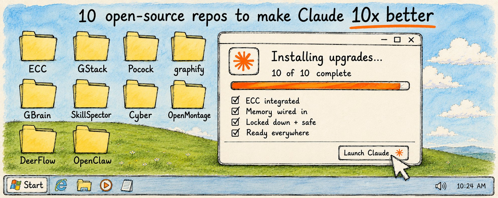

10 个让 Claude Code 真正发挥 10x 能力的开源仓库（完整指南）
10 Open-Source Repos That Quietly Make Claude Code 10x Better · X 长文完整中文解读
Yarchi 2026/06/27 的 X 长文，原文 2.9M 浏览。他跑了几个月，挑出 10 个真正让 Claude Code 脱胎换骨的开源仓库 — skill / harness / memory / agent team / security / video / research / personal agent。本文按原文顺序逐节翻译：开篇 3 段铺垫 + GitHub 入门科普 + 10 仓库（每个含 star 数 + 出品人 + 安装命令 + 常用命令 + 风险提示）+ The Bottom Line 收尾。1 张原文封面 + 15 段原始 CLI 命令完整保留。

Yarchi · 10 Open-Source Repos That Quietly Make Claude Code 10x Better · 2026/06/27 · 原 X 文章链接
Claude Code 已经是市面上最能干的 coding agent。它能规划、能写、能 debug、能发布。
但有一件事几乎没人告诉你：如果你跑的是原版开箱即用的 Claude Code，你只用了它大概 20% 的能力。
剩下那 80% 在开源仓库里。Skills、harness、memory layer、agent team —— 都是每天用 Claude Code、用到受不了它的局限之后做出来的东西。装上之后，一个 agent 就能记住你的 codebase、能 review 自己的工作、能像一支完整的团队那样交付。
但现在被吹爆的那些 repo 大多数是噪音。被刷上去的 star 数、花哨的 landing page、只是把 context 撑爆、让 Claude 变慢的 skill。装错一套，你的 setup 不是变好，是变差。
所以我把它们翻了一遍。看了真实的 GitHub 数据，读了文档，测试了 setup，记下了每个仓库是谁做的、为什么火起来。最后剩下 10 个真正值得花时间的。
每个仓库我会讲它是什么、适合谁、怎么用。我们开始。
首先 · 给不熟 GitHub 的同学（懂 GitHub 的可跳过）
GitHub 基本就是全世界最大的开源代码图书馆。人们把工具放在上面，免费给任何人下载和使用。一个 repo（repository = 仓库）就是一个项目的文件夹，里面有代码、有说明文档、什么都有。Stars 就像点赞：star 越多，说明越多人觉得它有用。我说一个 repo 有 20 万 star，是个很强的信号，说明它是真东西。
这里几乎每个 repo 在 Claude Code 里的工作方式都一样。套路是：
- 打开 Claude Code，命令行或 Claude app（Code tab）都行。
- 二选一装上：要么从 repo 的 README（首页）复制一行安装命令；要么直接把 repo 链接丢给 Claude Code，说「帮我装这个 repo」，Claude 自己读说明书自己装。
- 装完就完事了。新 skill / 工具马上能用。用斜杠命令（比如
/review）调用，或者直接用中文问 Claude。
ECC (Everything Claude Code)
从这里开始，因为这一个仓库掀起了整个 "config as a product" 的浪潮。
如果你用过 Claude Code，你一定见过：它写出有 bug 的代码，说"修好了"但其实没修，5 分钟前告诉它的事转头就忘，每次新对话从零开始。不是你用错了，那是 coding agent 没规则时的样子。
ECC 就是修这个的。一个独立开发者 Affaan Mustafa 拿 Claude Code 在 Anthropic hackathon 里 8 小时做出一个完整产品，然后把打磨了 10 个月的整套 setup 开源了出来。直接冲到 20 万+ star，GitHub 上最被 star 的 AI 仓库之一。
装上之后，它在后台默默让 Claude 真的守规矩：写测试再声称成功，别假装检查通过，别提交坏掉的代码，跨会话记住你的项目。装一次，之后每个会话都更利索，少操很多心。
打开 Claude Code，跑：
装完之后你正常用，大部分自动跑起来。但有几个命令你日常会用得到：
/ecc:plan "add user login with Google"在 Claude 写一行代码前先规划整个功能，避免你拿到 200 行不是你想要的东西。npx ecc-agentshield scan检查你项目里的安全漏洞；npx ecc-agentshield scan --fix自动修掉安全的那些。/analyze-repo把 Claude 丢进一个陌生的 codebase，给你一张清晰的全景图，继承别人项目时特别好用。/instinct-status展示 ECC 从你过往会话里学到的东西。用得越久，它越贴近你的工作方式。
剩下的，比如强制写测试、存 context、拦下坏掉的 commit —— 装上就自动跑了。
这一个来自 Garry Tan，Y Combinator（Coinbase / Airbnb / Stripe 背后的加速器）的 CEO。他写代码 20 年了，把现在用的 Claude Code setup 开源了出来 —— 用这个他一边兼职跑 YC，一边在职业生涯里产出最多的代码。
ECC 让 Claude 有纪律，GStack 给它一整支团队。它把一个 agent 变成一个虚拟创业公司：一个 CEO 在你写错方向之前先怼你，一个工程经理规划架构，一个设计师拦截丑陋的 AI 输出，一个 reviewer 找生产环境 bug，一个 QA lead 开真浏览器点你的应用，一个 release engineer 把它发出去。你像 CEO 一样驱动它，盯大决定，让剩下的自动跑。
适合独立开发者和小团队 —— 想要真正工程组织那种严谨，但不想真雇一堆人。如果你在发真产品，不只是玩，这个 workflow 是给你的。
打开 Claude Code，跑：
然后你按 sprint 推，一步步跑命令。最常用的几个（一共 23 个）：
/office-hours问你 6 个尖锐问题，在错误想法成型前先掐死。/plan-eng-review动手前先把架构规划好。/review扫描 Claude 写的代码，找出真实的生产 bug 并修掉。/qa开真浏览器像用户那样测你的 app，然后把回归测试写好，让 bug 再也不回来。/ship带完整测试审计把它发出去。每步喂下一步，所以从 idea 到 shipped 不像平时那么乱。
Matt Pocock 是个有名的 TypeScript 教育者（他做了 Total TypeScript，newsletter 教大约 6 万开发者）。他把自己每天真实工程里用的 skill 直接开源了出来。这个 repo 几乎全靠口碑传播 —— 开发者告诉开发者 —— 一路冲到 14.5 万 star，说明它戳中了真实的痛点。
他的整个卖点就在 tagline 里："skills for real engineers, not vibe coding"。GStack 给 Claude 一支团队，这些 skill 给它纪律。它们没让模型变聪明，只是让它别那么莽。最狠的那一点：Claude 很喜欢自己脑补你想要什么，结果做出一个不是你想要的东西。他的 skill 强迫 Claude 别瞎猜，先问尖锐的问题，把测试写对，别让代码在 agent 飞速干活的时候烂成没法维护的泥。
给那种从"给我搞个 quick app"毕业、开始维护真实软件的人 —— 尤其 TypeScript / JavaScript 圈子。如果你看过 Claude 自信地做出一个你没要的东西，这就是解药。
打开 Claude Code，跑：
按提示挑你想要的 skill，记得选上 /setup-matt-pocock-skills，它会针对你的项目配置一切。
然后按需调用它们。最有用的几个（一共大约 17 个）：
/grill-me在写一行代码前审问你到底想要什么 —— 免得你最后拿到一个错的 feature。/tdd强制正经的 test-first 开发，别让 Claude 不检查就声称代码能跑。/improve-codebase-architecture救一个已经变得难改的乱项目，Matt 建议每隔几天跑一次防烂。/diagnosing-bugs跑一个正经的 debug 循环，不瞎猜。
还记得前面那个问题吗：Claude Code 跨会话忘光一切，每次都重新读一遍你整个项目才能搞清楚怎么回事。一个中等大小的 codebase 每次烧掉几万 token，还没等你问问题呢。每一个会话都这样，又慢又贵。
graphify 正好修这个。它把任何文件夹、代码、文档、甚至 PDF 和图片变成一个可查询的知识图谱 —— 一张结构化的图，把所有东西怎么连在一起的画清楚。Claude 不再重新读每个文件，直接查图拿答案。在项目自己的 benchmark 上，这意味着每次查询从 123,000 token 降到大约 1,700 token —— 大约 71x 的降幅。它是今年增长最快的 repo 之一，Andrej Karpathy（OpenAI 联合创始人）发了他自己的 knowledge-base 工作流之后 48 小时直接爆火。（如果你看过我们之前拆 Karpathy 第二大脑搭建的那篇，这就是干活的工具。）
给那些在真实 codebase 上工作、烦透了又慢又贵的会话的人，或者想让 Claude 真懂你项目是怎么连在一起的、不再一个个文件瞎猜的人。
安装 —— 先在 terminal 跑：
（对，两个 y，这个是官方的）。然后把它注册到你的 agent：
然后在 Claude Code 里跑 /graphify . 一次，给你的项目建图。第一次慢，之后只更新有变的地方。从那儿开始正常问：
/graphify query "how does login work?"—— Claude 从图里拿答案，不再读每个文件。/graphify --update你的文档变了之后刷新它。
你甚至可以把图 commit 到 git，让你整个团队的 Claude 一开始就认识 codebase。
这是 Garry Tan（YC 那个 CEO）的第二个，也是 memory 问题的深水区版本。graphify 给 Claude 你代码的记忆，GBrain 给它你整个工作生涯的记忆：人、公司、会议、邮件、决定、想法。它不是个 side project —— 是 Garry 真在用的、生产环境的大脑，装着 14.6 万+ 页面、2.4 万+ 人、5000+ 公司，几打自动化 job 在他睡觉的时候更新它。
神奇的地方是它不只是扔给你匹配的页面，而是综合出答案。问"明天跟 Alice 开会前我需要知道什么？"，它给你的是写好的散文：她做什么、上次你们什么时候聊的、之间还有什么没关掉的、全部带引用。它建一张自连通的图，谁认识谁、谁做过什么，所以它能浮出普通搜索会漏掉的关联。
给创始人、投资人、operator，以及工作靠关系和 context 撑起来的人 —— 不只是代码。如果你走进一个会议，对着一个你发过 50 次邮件的人脑袋一片空白，这就是专门给那个场景做的。
把它接到 Claude Code 当 memory layer。最快试的方式是本地版 —— 没账号、没 server、大约 30 秒就好。在 terminal 里：
这就给你机器上装了一个本地脑。然后喂它点笔记，问它点东西：
要把 Claude Code 也接上，让你的 agent 直接用，跑：
然后用普通中文跟它聊就行。指给它一个文件夹 —— 笔记、会议记录、邮件都行 —— 然后问"谁在 Acme AI 工作？"或者"Bob 这个季度投了什么？"，它从所有它消化过的东西里给你带引用的答案。之后可以接上 Gmail、Google Calendar、会议记录，让它自动往里填。
bun install -g github:garrytan/gbrain，也别用 npm install -g gbrain（有个假包抢注了这个名字）。用上面那个 git clone 路径。你装到 Claude Code 的每一个 skill 跑起来都有你文件的真权限、有网络的真权限、有环境变量的真权限，从"装上"到"在你机器上跑起来"基本没什么安全关卡。一项对 42,447 个真实 skill 的研究发现 26% 含漏洞，5% 显示明显的恶意意图。这不是个小误差。
SkillSpector 是 NVIDIA 做出来开源的，就是门口那个保安。装之前先指给它，它扫那些危险的东西：隐藏指令、prompt injection、数据外传、可疑代码、悄悄要一大堆不该要的权限。你拿到一个 0-100 的安全分，和一个清楚的"该装还是别装"。
给所有要装 skill 的人 —— 看完这篇之后就是你。尤其在你从什么随机 GitHub repo 或不认识的 marketplace 装任何东西之前，特别值得跑一遍。
装它：打开 Claude Code，直接说：
Claude 帮你跑。它底层是个命令行工具，但你自己不用碰 terminal —— Claude Code 处理命令。
然后每当你打算装一个新 skill，先让 Claude 扫一遍。指给它一个 GitHub repo、一个文件夹、单个文件都行，它几秒给你一个风险报告：0-100 的分、发现了什么、该不该信。让这变成习惯 —— 先扫再装。这是这份清单上最便宜的保险，也是大多数人等到出事才会去做的那一件。
你想自己在 terminal 里跑也行，手动命令是：
Anthropic-Cybersecurity-Skills
还是安全，但角度反过来。上一条是检查 skill 安不安全。这一条让 Claude 自己变成安全专家。一个 817 个结构化网络安全 skill 的库 —— 从恶意软件分析、威胁狩猎、到云端泄露和事件响应 —— 每一条都是按真实行业框架（MITRE ATT&CK、NIST 等）映射的、分步骤的 playbook。
思路很简单：一个初级安全分析师知道在可疑文件上跑哪个工具、哪条规则能抓住特定攻击、怎么跨云厂商 scope 一次泄露。你的 AI agent 不知道 —— 直到你给它这些 skill。装上之后，你把一个安全问题丢给 Claude，它不瞎猜，开始按专家流程走。
给想给自己 app 加固的开发者、安全爱好者，以及对防御好奇的人。不需要是安全专家 —— skill 带着专家能力，你只负责把 Claude 指向问题。
打开 Claude Code 跑：
然后用普通中文问 Claude 安全问题，它会调对的 playbook。"Review my web app for the OWASP Top 10 vulnerabilities" 让它按通用漏洞清单审计你的代码。"Walk me through investigating this suspicious login activity" 给你真实的事件响应流程，不是不着边际的建议。小贴士：别一次全装 817 条，按你真需要的 domain 装（比如云安全、代码审计），别把 Claude 的 context 撑爆。
时间走出代码，因为 Claude Code 不只是给软件用的。OpenMontage 把你的 AI agent 变成一个完整的视频制作工作室。你用自然语言描述想要的视频，agent 把整个流程干了：调研主题、写脚本、生成或找视觉素材、加旁白和音乐、剪时间线、渲染成 MP4。它最近刚冲到 GitHub trending 第一名，名副其实。
看选哪种模式：要么是 AI 生成的片段（如果你接入 Veo / Runway 这种模型）、要么是真实档案素材拼接进时间线、要么是生成的图片动效剪成精致的成片。它有 12 条不同的制作流水线：电影预告、动画解说、talking-head 主持人视频、真实素材纪录片（从 NASA、Archive.org 这些开放档案拉真实片段）、等等。你甚至可以丢给它一个你喜欢的 YouTube 视频说"给我做一个类似的，但主题换成我的"，它从参考做计划。
给创作者、营销人、教育者、以及任何想要视频但不想学剪辑软件、不想订 5 个独立 AI 订阅的人。按项目自己的例子，一个 60 秒旁白动画短片 API 成本可以就一美元多，而且有完全免费的路径用本地模型和免费 stock footage。
装之前，机器上需要几样东西：Python 3.10+、Node.js 18+、FFmpeg（视频工具）。然后打开 Claude Code 跑：
装好之后，在 Claude Code 里打开这个项目，用自然语言描述你想要什么：
或者走真实素材纪录片路径：
agent 调研你的主题、写脚本并配音、找免版权音乐、烧字幕、渲染最终视频。它在花任何钱之前先给你一份计划和成本估算，跑自己的质量检查再把成片交给你。你也可以贴个 YouTube 或 TikTok 链接说"做一个类似的，但主题换成我的"。
这一个来自 ByteDance，TikTok 背后的公司，也是清单上最重的家伙。DeerFlow 是给那些本来要花你几小时甚至几天、真正长且复杂的任务做的。你扔给它一个大活儿，比如"调研 2026 年 AI 创业公司 top 10，给我做一个 presentation" —— 它不会被噎住 —— 一个 lead agent 把任务拆开，并行拉起一支 sub-agent 团队（一个爬数据、一个做分析、一个做图表），最后全拼回去。
跟普通 chatbot 的区别是，它真在沙箱环境里干活 —— 不只是描述它会做什么。它跑代码、建文件、生成 dashboard 和 slide deck、生产最终交付物。它有自己的 memory、自己的文件系统、可以跑很久不丢线索。刚发布的时候，24 小时冲到 GitHub trending 第一。
给那些真有大型多步骤任务的人：深度研究报告、数据流水线、建 dashboard、自动化整条内容工作流。"给我写个函数"这种小活儿用不上它，它闪光的时候是任务大到你想委派出去自己走开。
打开 Claude Code 跑：
这会启动一个配置向导设你的 API key 和偏好。然后启动它（Docker 是推荐方式）：
它在你的浏览器里开一个完整的 agent 界面。你甚至可以把它接到 Telegram 或 Slack，从手机上甩任务。
最大的留到最后。OpenClaw 是 GitHub 历史上增长最快的开源项目。一个叫 Peter Steinberger 的奥地利开发者第一个版本花了大约一个小时做完当个人实验，几个月之内冲过 React，成为整个 GitHub 上 star 最多的真软件。OpenAI 因为它直接把他招了过去。
清单上其他所有都活在你的 coding tool 里。OpenClaw 把 AI agent 从终端拉出来，塞进你已经用的 app：WhatsApp、Telegram、Slack、Discord、iMessage、还有几十个。它本地跑在你自己的机器上，24/7 在线，所以你能像跟朋友发消息一样从手机上跟你的 AI 助手聊 —— 它真干活：管理你的日历、处理邮件、跑调研、控制工具，全在你自己的设备上，用你自己的数据。这是"这一切要去向哪"的那个选择：不是一个 coding 帮手，而是一个住在你生活里的个人 agent。
给那些想要真正 24/7、完全自己掌控的个人助手的人 —— 不是那种把每个字都记下来的云服务。如果你想过能在你离开电脑的时候发个消息让 AI 帮你处理点事，这就是。
在 terminal 装：
引导向导带你连接你的 messaging app 和 AI 模型（带自己的 Claude 或 OpenAI key）。一旦跑起来了，你在任何接好的 app 上发消息就行 —— "summarize my unread emails and draft replies"、"remind me to call the dentist at 3pm" —— 它在后台干。
SOURCES & CREDITS
引用与原文出处
-
ORIGINAL ARTICLE
10 Open-Source Repos That Quietly Make Claude Code 10x Better (Full Guide)
作者：Yarchi (@undefinedKi) · "AI & tech researcher | Building cool stuff | Sharing everything I learn"
发布：2026/06/27 12:50 UTC · X 平台 · 2.9M 浏览
原文链接：https://x.com/undefinedKi/status/2070852381164630023 -
REPO 01 · ECC
Everything Claude Code — affaan-m
链接：https://github.com/affaan-m/everything-claude-code -
REPO 02 · GStack
Garry Tan (YC CEO) — garrytan
链接：https://github.com/garrytan/gstack -
REPO 03 · Matt Pocock skills
TypeScript educator · mattpocock
链接：https://github.com/mattpocock/skills -
REPO 04 · Graphify
Knowledge graph layer — safishamsi
链接：https://github.com/safishamsi/graphify -
REPO 05 · GBrain
Personal life memory system — garrytan
链接：https://github.com/garrytan/gbrain -
REPO 06 · SkillSpector
Skill security scanner — NVIDIA
链接：https://github.com/NVIDIA/SkillSpector -
REPO 07 · Anthropic-Cybersecurity-Skills
817 structured cybersecurity skills — mukul975
链接：https://github.com/mukul975/Anthropic-Cybersecurity-Skills -
REPO 08 · OpenMontage
Video production studio — calesthio
链接：https://github.com/calesthio/OpenMontage -
REPO 09 · DeerFlow
Multi-agent research framework — bytedance
链接：https://github.com/bytedance/deer-flow -
REPO 10 · OpenClaw
Personal AI agent in messaging apps — openclaw
链接：https://github.com/openclaw/openclaw -
AUTHOR · X
Yarchi (@undefinedKi) · 9,897 followers · 10,950 likes · 451 posts
链接：https://x.com/undefinedKi - INTERPRETATION 本文为解读版本，按中文阅读习惯重排。原文 10 节 + 1 张封面 + 15 段 CLI 命令完整保留；中文部分为意译，便于理解。CLI 命令、repo 名、handle、star 数全部保持英文原貌，不可译。如需引用请以原文为准。
10 个仓库完整翻译 · 1 张原文封面 · 15 段原始 CLI 命令原样保留 · star 数 / 出品人 / 风险提示全部就位 · The Bottom Line 收尾（先挑一个，别全装；扫描先于安装）。从 ECC 起步，或从跟你问题最对的那个起步——一周一个，节奏比全装重得多。
That's the 10. Quick recap: don't install all of them at once.
Pick the one that matches your actual problem·install it·use it for a week.
读完了。下一步：先选一个跟你问题最贴的，一周后再回来挑下一个。Ciao, @undefinedKi